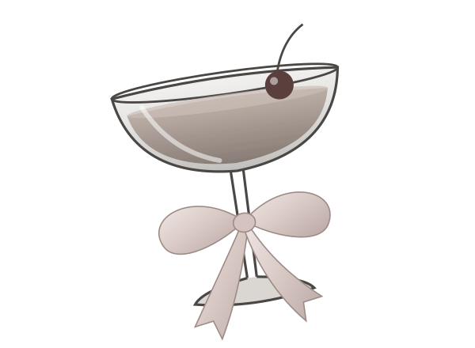

Recipe Book
HOUSE RECIPES · TONIGHT'S POUR
小 吧 台 · 配 方 本
Tonight's Recipe
示例配方 V1.0
[ 换一张 ]
[ 保存 ] [ 改名 ] [ 另存 ] [ 导入 ] [ 导出 ]
[ 删 ]
调酒台
Behind the Bar
+
温度 1.00 · 回复 64,000 · 上下文 2,000,000 · 流式 开 · 推理 高
其余 12 项都收在这里，平时不用管
原料
— Ingredients —
共 46 样 · 加了 19 样 · 9,830 t
— last order at midnight —